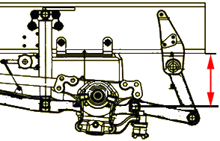
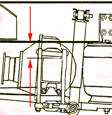

Calibration of level sensor shall be done when:
Any level sensor is replaced.
Any air bellows is replaced.
Work has been done on level sensor.
Control unit is replaced.
Note:
During calibration the vehicle will be raised quickly to check that the level sensors have correct reverse polarity.
Test conditions:
Parking brake released.
Primary tank pressure higher than 800 kPa.
Wheels blocked.
Vehicle unloaded.
Check that there is no person under the vehicle.
Check that control rods are fastened between level sensors and axles.
No fault in the system.
Procedure:
Start the engine and fill the system with air until the compressor cuts out.
Use the suspension's remote control to raise and lower the vehicle to correct calibration level, as shown below.
Front axle
250 mm

Drive axle
Rear axle type
MS08125=146 mm
MS11145=150 mm
MS11150, 14T, 16T=162 mm
MS11150, 18T=135 mm

Select function:"Level sensor calibration", press "OK".
A dialogue box shows if the function succeeded or failed.
Function done.
If the calibration failed, check test conditions.